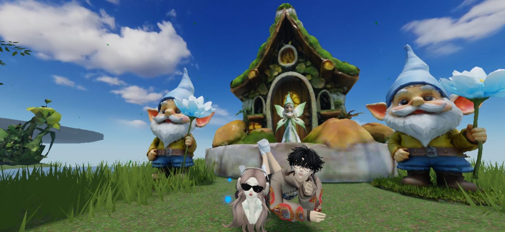

Tiup Lilinnya, Aegi Gom! ✨


Happy Birthday Aegi Gom kesayanganku! 🐻💗
Dari awal kenal sampai sekarang, setiap momen sama kamu itu berharga banget. Mungkin kata-kata ngga akan pernah cukup buat ngejelasin betapa berarti kamu di hidup aku.
Aku gatau harus mulai dari mana, setiap aku mau nulis ini kek aku tiba-tiba ngebalank mau nulis apa. rasanya semua kata pada berebut keluar, but it's okey. Aku coba tulis pelan-pelan yaa... dari hati yang paling tulus buat kamu.


Selamat jadi versi kamu yang lebih, lebih baik, lebih dewaasa tapi tetap lembur dan humoris seperti biasanya. panjang umur dalam kebahagian dan cinta yang kamu pantas dapatkan.
A wish for you on your birthday, apapun yang kamu impikan semoga segera terwujud, apapun yang kamu doakan semoga Allah kabulkan pelan-pelan, satu persatu di waktu yang tepat.


Tapi di hari spesial kamu ini ini, aku cuma mau kamu selalu inget satu hal: Kamu itu pantas dicintai, didengerin, diperhatiin, dan dirayakan bahkan dalam hal-hal terkecil sekalipun. Kamu itu berharga, bukan cuma untuk orang lain, tapi yang paling utama untuk diri kamu sendiri.
Aku mau minta maaf kalau selama ini mungkin masih ada sikapku yang buat kamu kecewa atau salah paham. Jujur, aku sudah lama banget menutup hati, dan kamu adalah satu-satunya orang yang bikin aku berani buat membukanya lagi sekarang.


Aku mungkin masih belajar, tapi aku pengen ke depannya kita bisa lebih saling terbuka dan percaya. Aku pengen hubungan kita makin kuat tanpa ada rasa curiga yang bikin kita jauh. Aku belajar buat percaya sepenuhnya, dan aku harap kamu juga bisa kasih aku ruang buat jadi tempat kamu cerita apa pun—tanpa ragu, tanpa sembunyi, dan tanpa perlu ada rasa takut lagi.


Maaf kalau aku masih banyak kekurangan, sering bikin kamu marah atau overthinking. Tapi perlu kamu tahu, aku juga sedih kalau kamu masih meragukan ketulusanku, padahal di hati aku cuma ada kamu.
Kalau nanti hidup kamu ngga sejalan sama harapan kamu, kalau kamu capek, drop bingung atau ngerasa dunia tidak adil sama kamu, please remember this "YOU DESERVE BETTER" kamu layak dapat semuanya, cinta yang lembut, perhatian yang tulus dan kebahagian yang ngga bikin kamu sendirian.



Terima kasih sudah jadi orang sabar sama tingkah aku yang kadang-kadang kekanakan atau mungkin buat kamu sedih, terima kasih sudah jadi tempat cerita aku, selalu kasih charge energi kalau aku lagi capek banget.
Makasih udah izinin aku masuk ke dunia kamu.

Makasih udah izinin aku masuk ke dunia kamu.